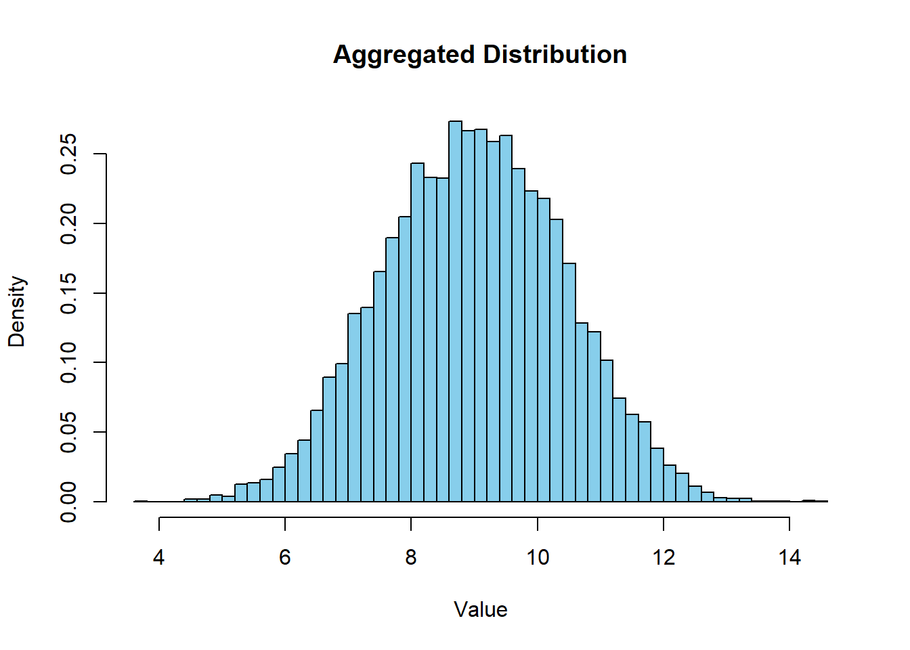

# Aggregation of triangular distributions with Monte Carlo simulation
# Load necessary library
library(triangle)
# Define the triangular distributions
distributions <- list(
c(1, 3, 5),
c(2, 4, 6),
c(0, 2, 4)
)
# Number of samples
num_samples <- 10000
# Generate samples from each triangular distribution
samples <- lapply(distributions, function(params) {
rtriangle(num_samples, a = params[1], b = params[3], c = params[2])
})
# Sum the samples to get the aggregated samples
aggregated_samples <- Reduce(`+`, samples)
# Plot the histogram of the aggregated samples
hist(aggregated_samples, col="skyblue", breaks = 50, probability = TRUE,
main = "Aggregated Distribution", xlab = "Value", ylab = "Density")
# Calculate and print summary statistics
mean_value <- mean(aggregated_samples)
median_value <- median(aggregated_samples)
std_dev <- sd(aggregated_samples)
cat("Mean:", mean_value, "\n")Mean: 8.997505 cat("Median:", median_value, "\n")Median: 9.00486 cat("Standard Deviation:", std_dev, "\n")Standard Deviation: 1.430559